Diversos modelos e marcas
Compatibilidade por modelo de dispositivo, sem limitar o suporte a apenas algumas marcas.
Uma integração criada por Gabilan Games que permite utilizar diversos modelos StreamDock e controladores compatíveis, independentemente da marca, diretamente no software Elgato Stream Deck.
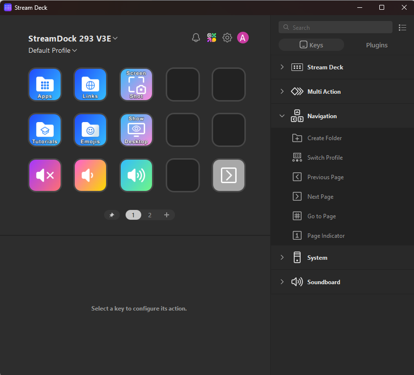

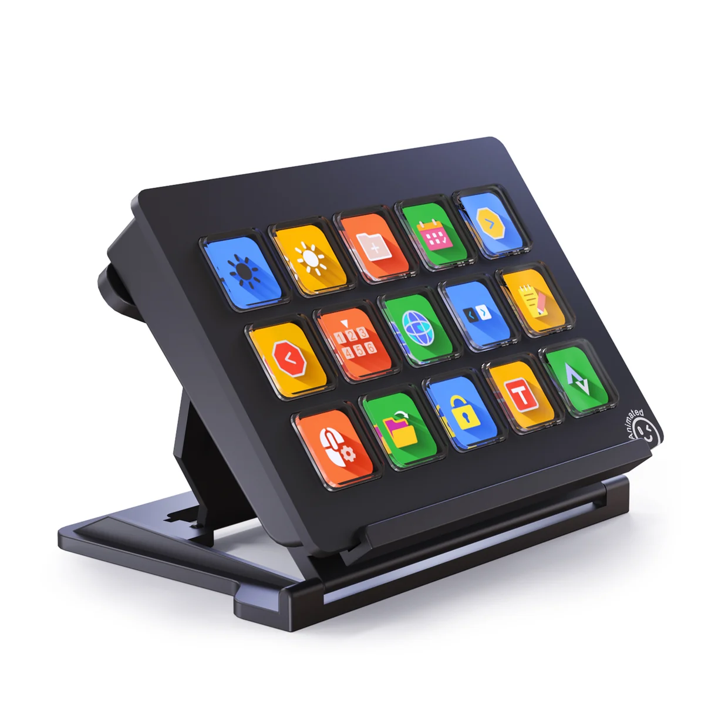
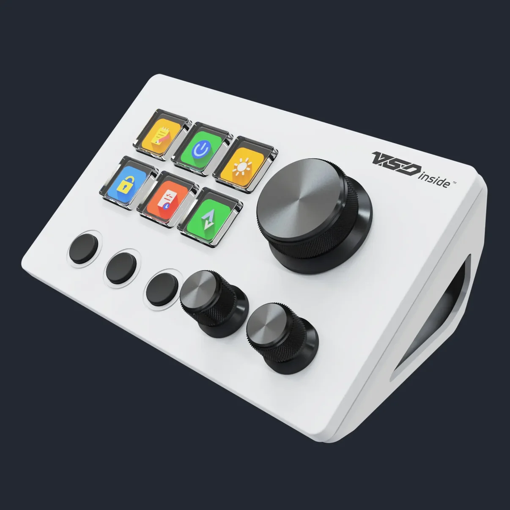
Compatibilidade por modelo de dispositivo, sem limitar o suporte a apenas algumas marcas.
Utilize seu hardware compatível na interface de configuração do Stream Deck.
Confira a compatibilidade com seu equipamento antes de comprar a licença.
Os modelos abaixo são exemplos de formatos suportados. Diversas marcas comercializam equipamentos semelhantes: Mirabox, Ajazz, Rise Mode, Fifine, Redragon, VSDInside e muitas outras. O que determina a compatibilidade é o modelo específico, não apenas a marca.
Formato N4 / N4 Pro e semelhantes
Formatos 293 / 293 V3 e semelhantes
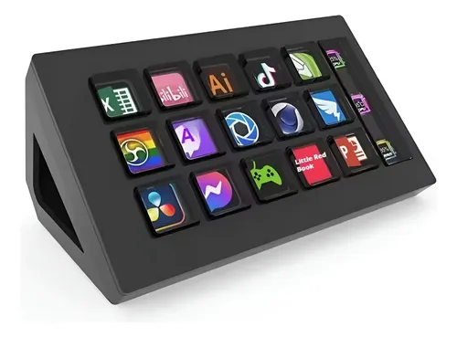
Formatos com teclas e controles
Teclas, seletores e botões físicos
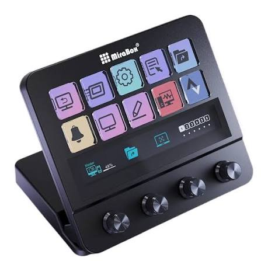
Modelos com visor integrado
Variantes com diferentes disposições
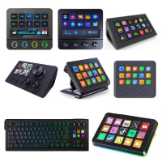
Diversos fabricantes e versões
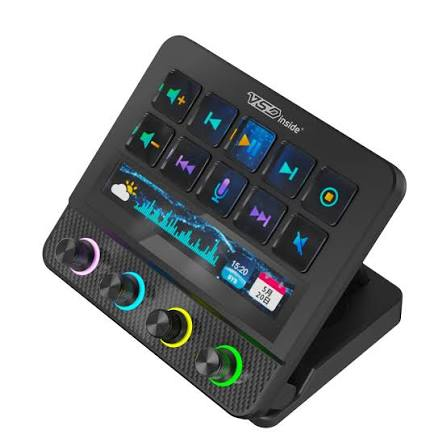
Verifique a compatibilidade do modelo
Imagens do software exibindo diferentes dispositivos reconhecidos pela integração.
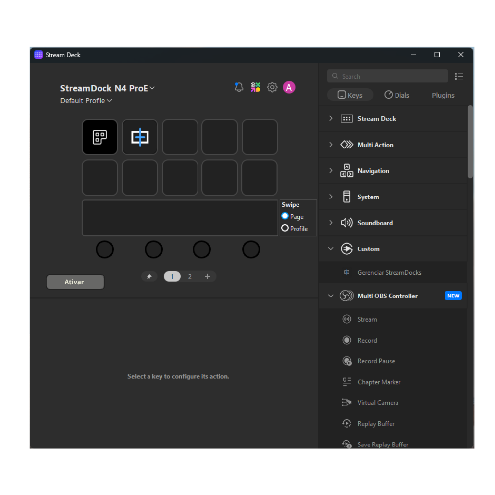
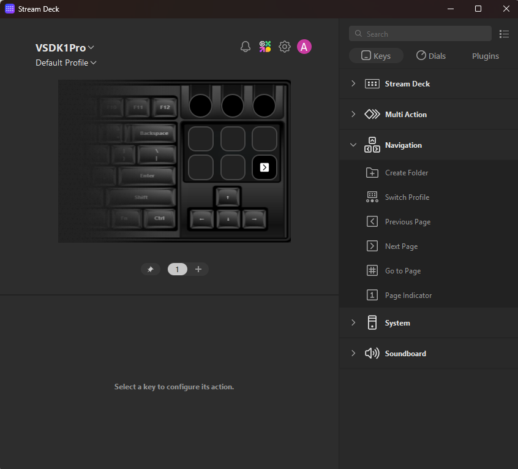
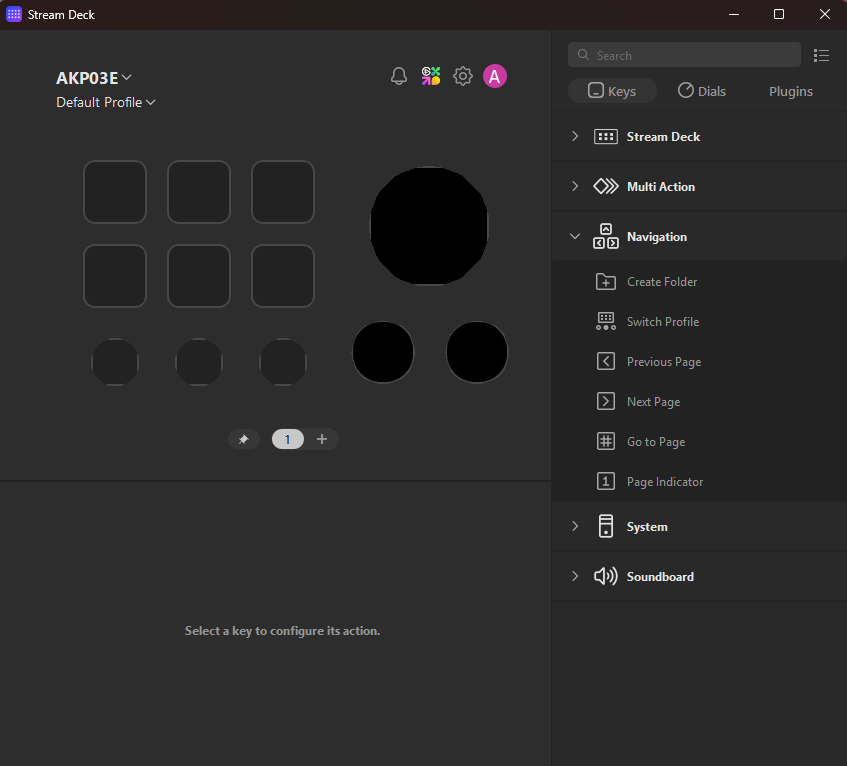
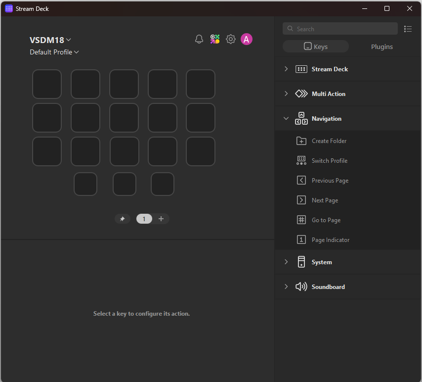
Instalação em poucos passos no Windows.
Encerre o software original do dispositivo e também o Elgato Stream Deck.
Localize os arquivos icuuc.dll e licence.key.
O local padrão costuma ser:
C:\Program Files\Elgato\StreamDeckColoque a DLL e a chave nessa pasta. O Windows poderá solicitar permissão de administrador.
Inicie o programa e aproveite as 24 horas de avaliação.
Licença completa com pagamento único, sem assinatura.
Experimente no seu dispositivo compatível antes de adquirir a licença.
Para comprar, entre em contato pelos canais oficiais do Gabilan Games e receba sua chave individual.